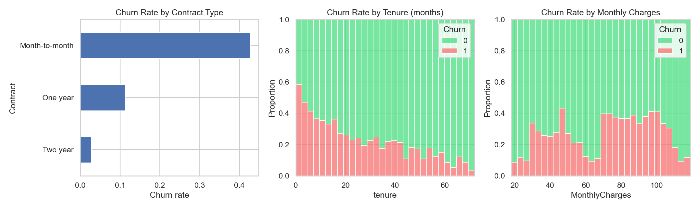
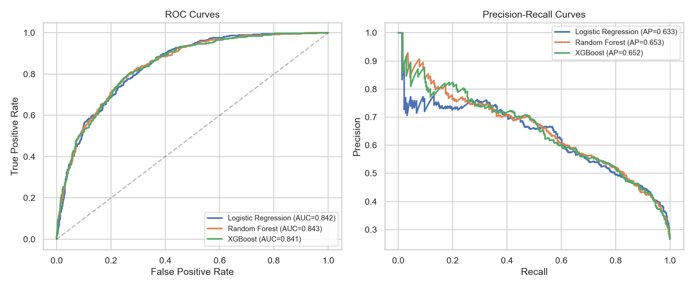
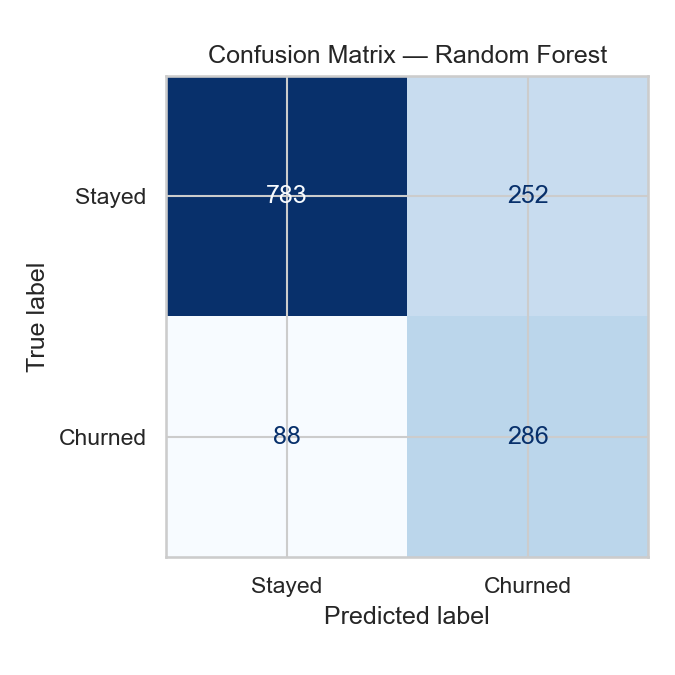
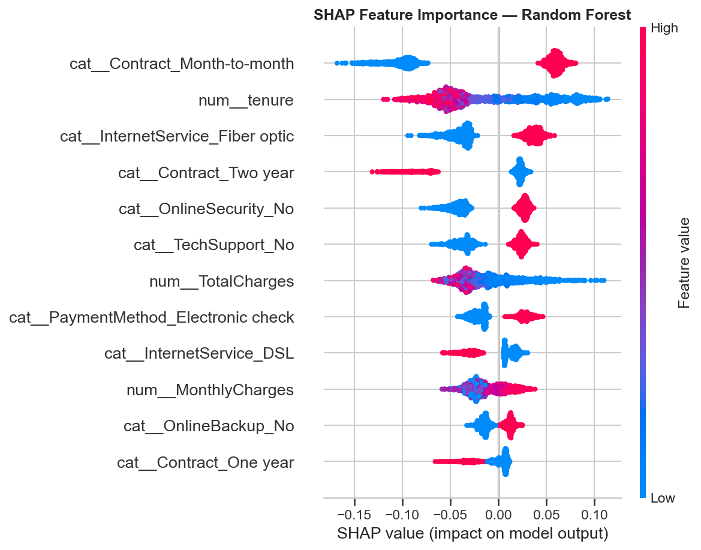

The numbers
7,043
Customers
26.5%
Churn rate
0.843
Best ROC-AUC (Random Forest)
76%
Recall on churners
Problem
A telecom retention team needs to know, before a customer leaves, who's at risk — and why. A black-box risk score isn't actionable on its own. The goal: a model that ranks churn risk accurately, and explains its reasoning well enough to inform an actual retention campaign.
Method
- Clean — coerce
TotalChargesto numeric (11 blanks, all tenure=0 new customers, filled with 0). - EDA — churn rate by contract type, tenure, monthly charges.
- Pipeline —
ColumnTransformer(one-hot 15 categorical + scale 4 numeric features) into 3 classifiers. - Models — Logistic Regression, Random Forest, XGBoost, all imbalance-aware, evaluated on a held-out 20% stratified test set (1,409 customers).
- Explainability — SHAP
TreeExplaineron the winning model.
Churn drivers

Model comparison
| Model | ROC-AUC | PR-AUC |
|---|---|---|
| Logistic Regression | 0.842 | 0.633 |
| Random Forest | 0.843 | 0.653 |
| XGBoost | 0.841 | 0.652 |

Random Forest test-set performance (accuracy alone is misleading on an imbalanced label — precision/recall on the "Churned" class is what matters):
| Class | Precision | Recall | F1 |
|---|---|---|---|
| Stayed | 0.90 | 0.76 | 0.82 |
| Churned | 0.53 | 0.76 | 0.63 |

Recall on churners is prioritized over precision by design (
class_weight="balanced") —
for a retention team, missing an actual churner is far more costly than a false
alarm (a discount offer to a loyal customer is cheap; losing a customer silently is not).
Explainability (SHAP)

- Contract type dominates — month-to-month customers churn far more than 1-2 year contract customers. Highest-leverage lever: incentivize a switch to annual contracts.
- Tenure matters most in year 1 — churn risk peaks before the ~12-month mark. An onboarding push in months 1-6 targets the riskiest window directly.
- High monthly charges without add-on services (no tech support / online security) is a recurring churn pattern — bundling support may offset price sensitivity.